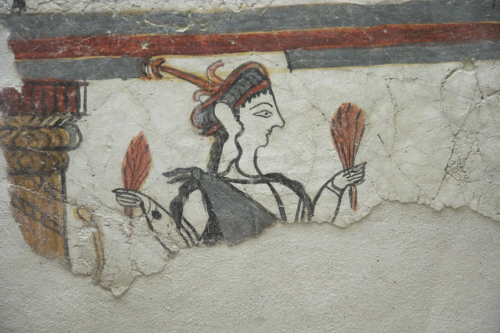

Create an HTML page with a heading(Tittle heading)
primary heading and subheading
which tag did you use
Create a page with 5 wallpaper images
taken from the internet


Use (br) and (hr) tags to display a piece of
text with line breaksTry to write the following chemical equation using HTML
c+ o2 -> co2
done reaction updated in HTML page
TRy to write a Wikipedia article using HTML

Eritha languages
Article Talk read view history view source tool
Eritha (Mycenaean Greek: 𐀁𐀪𐀲, syllabic transcription e-ri-ta,[a] pronounced [ˈɛ.rɪ.tʰa]; fl. c. 1180 BCE) was a Mycenaean priestess. She was a subject of the Mycenaean state of Pylos, in the southwestern Peloponnese, based at the cult site of Sphagianes. Sphagianes is believed to have been near the palatial centre of Pylos, and may have been located at modern Volimidia. As a priestess, Eritha held an elevated position in Pylian society. She is the more prominent of the two priestesses known from Pylos, and held economic independence and social prominence unusual for women in the Pylian state. She held authority over several other people, including at least fourteen women who were probably assigned to her by the palatial state as servants to assist with the distribution of religious offerings. In the last year before the destruction of the palace at Pylos (c. 1180 BCE), Eritha was involved in a legal dispute over the status of her lands against the local damos, which represented the other landholders of Sphagianes. While the exact nature of the dispute is unclear, Eritha seems to have claimed that part of her land was held on behalf of her deity, and therefore subject to reduced taxes or obligations. The outcome of the dispute is unknown. The record of Eritha's land dispute constitutes the longest preserved sentence of Mycenaean Greek and the oldest evidence of a legal dispute from Europe. It has been used as evidence for the status of women in the Mycenaean world, as well as for relations between the palace, religious organisations and civic society, and for the legal systems and infrastructure that existed in the Pylian state.